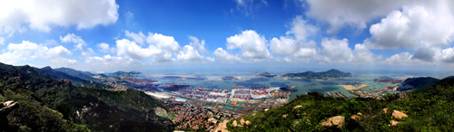
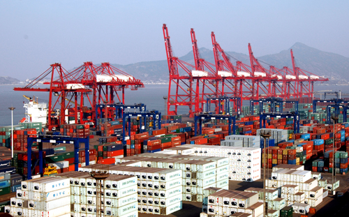
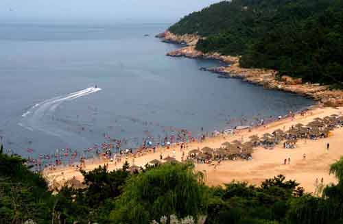

连云港市情况介绍
连云港市位于我国万里海疆中部，南连长三角，北接渤海湾，隔海东临日韩，通过陇海铁路连接中国中西部地区，是新亚欧大陆桥的东端桥头堡、中国优秀旅游城市、中国十大港口城市、全国性综合交通枢纽城市。全市总面积约7500平方公里，人口520万人，其中市区216万人。2013年，全市实现地区生产总值1785.42亿元，直接利用外资8.7亿美元，进出口总额66.4亿美元。连云港港口完成吞吐量2.02亿吨，集装箱运量549万标箱。
近年来，中国中央政府高度重视连云港的发展，《江苏沿海地区发展规划》、《长江三角洲地区区域规划》、国家东中西区域合作示范区以及创新型城市四大国家发展战略在连云港市叠加，为连云港市提供了广阔的发展空间。2013年9月，习近平总书记出访哈萨克斯坦期间，提出了建设丝绸之路经济带的战略构想，亲自见证了连云港与哈萨克斯坦国有铁路股份公司正式签订过境运输合作协议。2013年11月，李克强在出席上合组织会议时提出，中国愿在新亚欧大陆桥东端连云港为上海合作组织成员国提供物流、仓储服务。江苏省委省政府，更是将连云港作为江苏对外开放的“重中之重”，已将连云港自由贸易港区上报国家层面。连云港作为丝绸之路经济带东向开放桥头堡，正在新一轮改革开放的广阔舞台，展现出勃发英姿。
（一）交通便捷。连云港是42个全国性综合交通枢纽城市之一，发展形成了以港口为重要特色的现代立体交通网络。
1．海运
连云港港是中西部地区最经济便捷的出海口，目前与世界上150多个国家和地区的近千个港口开展贸易运输往来，开辟日韩、东南亚、美西、中东等近60条国际国内航线，有生产性泊位52个。连云港港口完成吞吐量2.02亿吨，集装箱运量549万标箱。

主港区25万吨级主航道正式通航，30万吨级航道2015年建成。北翼赣榆港区5万吨级航道、南翼徐圩港区10万吨级航道建成。灌河港区2万吨级航道建成通航。

2．铁路
连云港是新亚欧大陆桥东桥头堡，大陆桥东起连云港，西至荷兰鹿特丹港，贯通我国中西部地区，并与中亚及欧洲30多个国家紧密相连。铁路直通北京、上海、南京、成都、武汉等大中城市。
3．公路
沈海高速（G15）、长深高速（G25）、连霍高速（G30）在此交汇。中心城区至上海车程约4小时，至南京约3小时,至青岛约2小时。
4．航空
民航机场距市区25公里，开通北京、上海、广州、深圳、宁波、西安等国内航线18条及香港国际航线。新国际机场选址基本确定，将在十二五期间建设。市区距淮安涟水机场100公里，距盐城南洋机场160公里，距徐州观音机场190公里。
5．内河
以疏港航道、连申线（三级航道）、盐河航道（三级航道）、灌河航道（三级航道）为主通道，形成至长江、京杭大运河的海河联运航道体系。
（二）产业用地资源丰富。连云港海岸线长211.58公里，拥有江苏唯一的基岩海岸40多公里和江苏所属的9个海岛，可以建10-30万吨级深水码头，拥有丰富的临港产业用地，现有14个省级以上开发园区和500平方公里的工业盐田，为承接重大项目落地提供丰富土地支撑。
（三）产业发展迅速。全市重点发展新医药、新材料、新能源、高端装备制造四大优势产业，积极发展新信息技术、节能环保、海洋产业三大新兴产业，形成“4+3”新兴产业体系。同时加快发展冶金、石化等“基础型、基地型”产业，构建“两基型”临港产业体系。
新医药产业。形成了以化学创新药、现代中药、生物医药为主体，以医疗设备及器材、药品辅药及包装材料为两翼的产业发展模式，恒瑞、豪森、康缘、天晴4家重点企业入选中国制药工业50强。
新材料产业。形成了高性能纤维、高分子复合材料、硅材料等多个主导方向，是国家高性能纤维及复合材料高新技术产业化基地、国家火炬计划硅材料产业基地，碳纤维T700实现规模化生产。
新能源产业。拥有国内单机容量最大的田湾核电，形成了上下游配套的风电装备产业链、光伏产业链，形成年产风电整机400台、叶片10000片、塔架1200套生产能力，打造了“太阳雨”太阳能光热中国第一品牌。
高端装备制造业。形成了专用设备、智能设备、海洋工程装备制造等产业体系，变频刮板运输机、非开挖工程钻机、大型救援钻机、氨纶成套设备、流体装卸设备等产品填补国内空白。
新信息技术产业，重点突破集成电路、新型显示、高端软件、物联网产业。节能环保产业涵盖节能与环保装备、节能与环保产品、资源综合利用三大领域。海洋产业形成海洋医药、海洋化工、海洋食品加工、海洋生物医药四大版块。
石化产业。形成了以石化、盐化、农化、生物化工为代表的产业集群，连云港碱厂、德邦集团的纯碱位居国内前列，罗盖特是亚洲最大的山梨醇生产企业，三吉利邻苯二酚的连续化生产线达到国际先进水平，新海石化在国内民营石油炼化企业中名列前茅，中石化炼化一体化项目正在积极推进。
冶金产业。钢铁、镍合金、铜材加工等子行业发展初具规模。组建了江苏沿海钢铁集团有限公司，集团企业产能达1500万吨。目前国内最大的直缝焊管生产和出口企业——珠江钢管，年产380万吨高性能管线钢管项目一期已经投产，世界上唯一宽度超过3000mm的热连轧机组3352mm宽幅热连轧机组正在建设。
（四）山海风光优美。连云港市是中国优秀旅游城市、全国20个优秀旅游目的地之一，是江苏三大旅游资源富集区之一，拥有江苏最高的山——花果山、江苏最大的岛——连岛。全市共有风景各异的国家等级旅游景区35个、景点200多处，拥有花果山、连岛、孔望山、渔湾、大伊山、东海国际水晶珠宝城、温泉旅游度假区等8个国家4A级景区。市区绿地率达37%，绿化覆盖率达到40％，人均公园绿地面积约13.7平方米，环境空气质量优良天数达到321天，环境优越。
